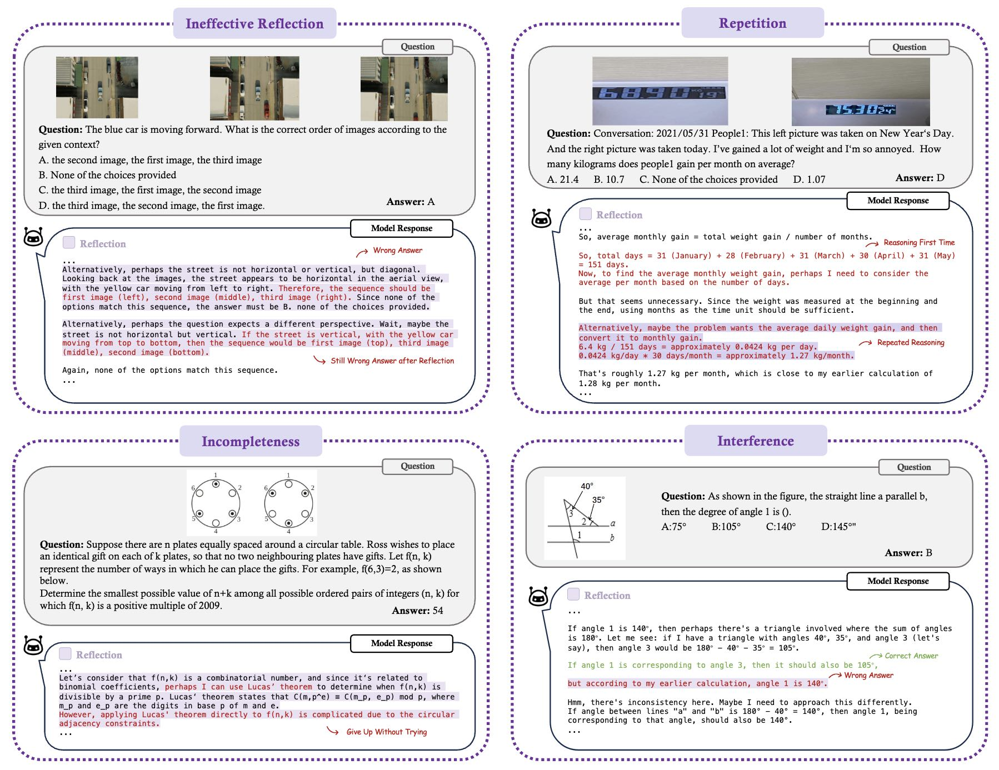
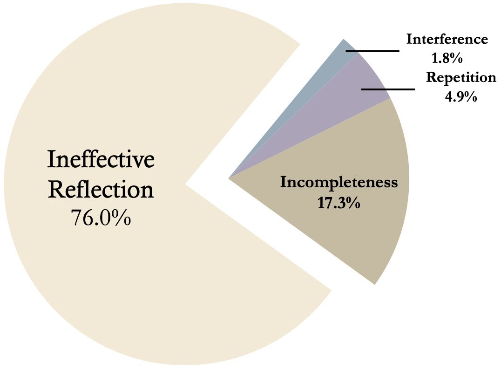
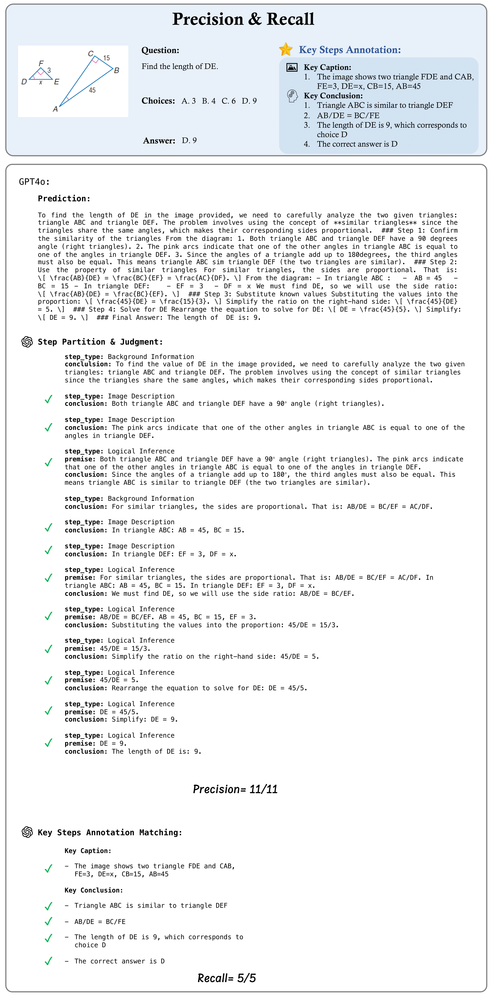
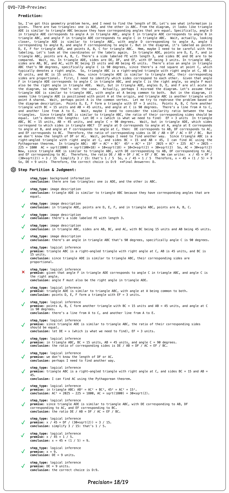
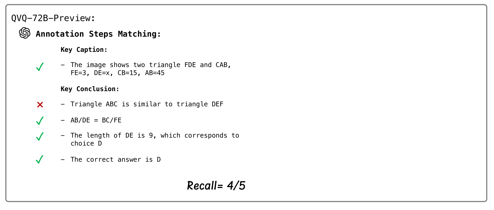
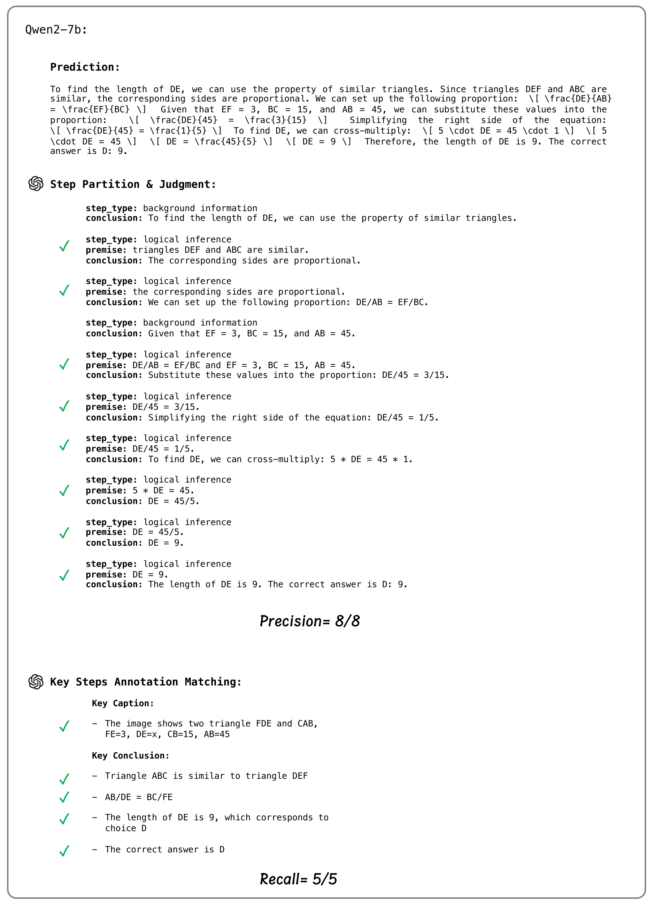
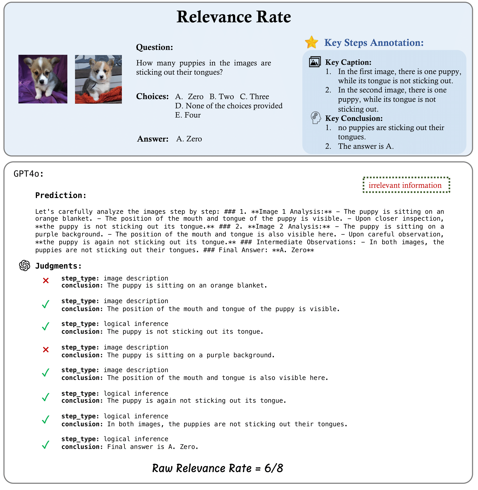
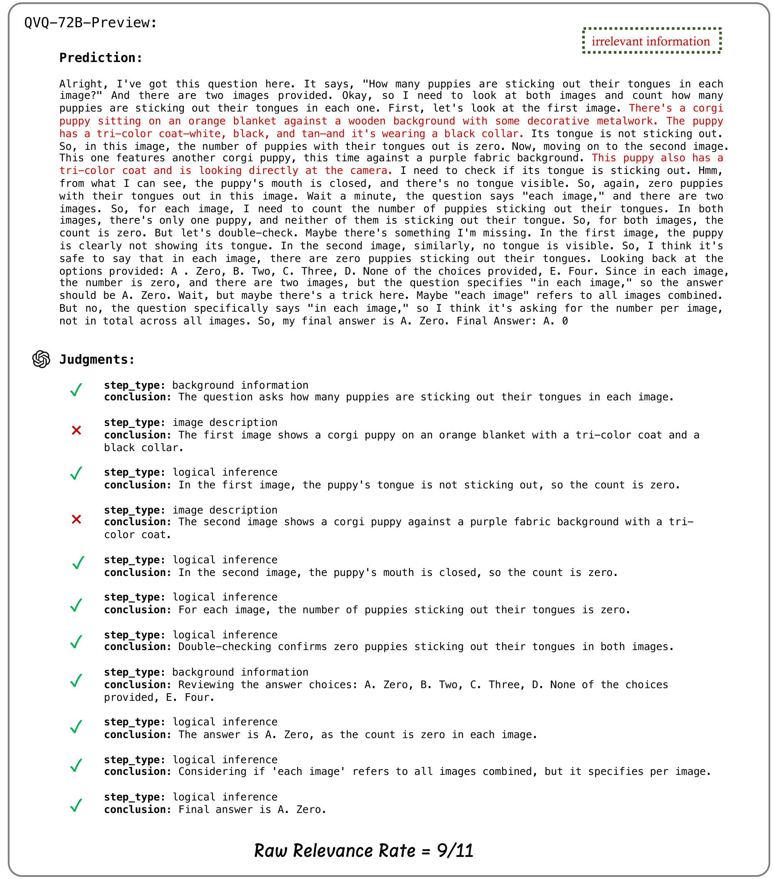
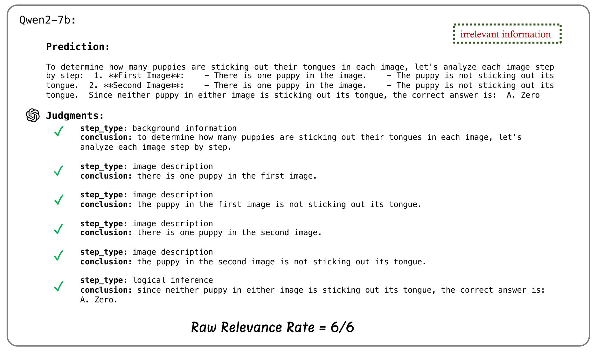
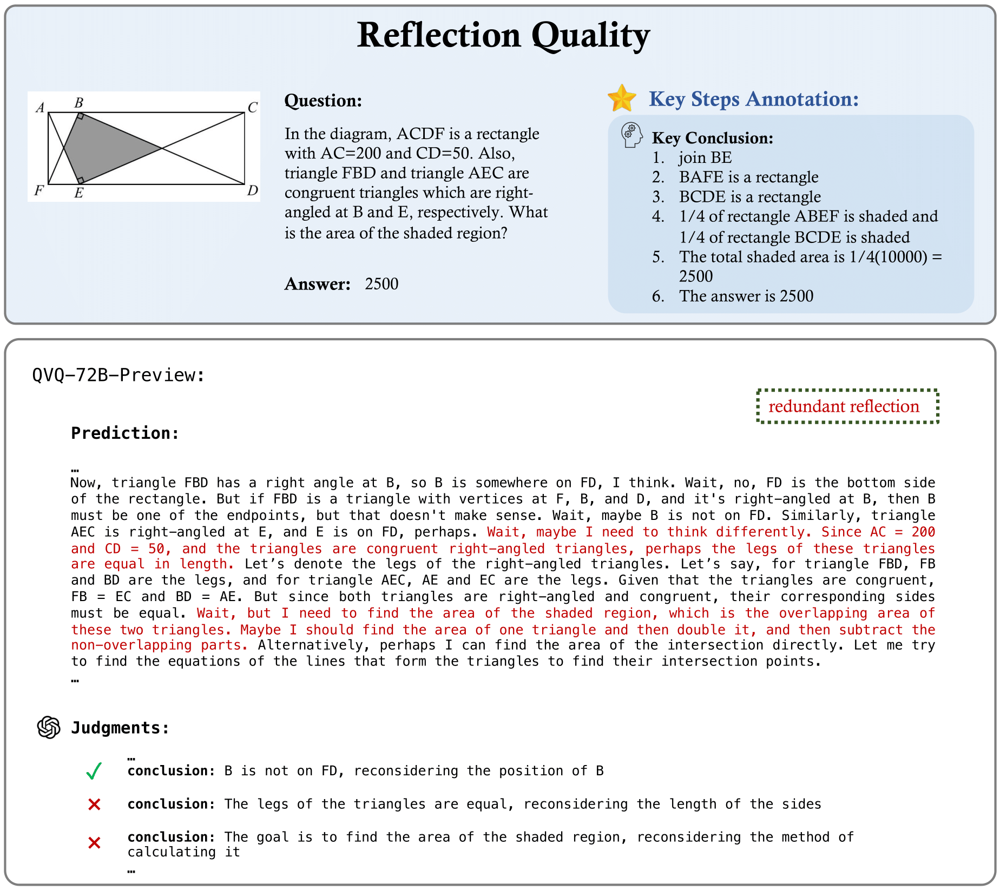

| # | Model | CoT Quality | CoT Robustness | CoT Efficiency | ||||||
|---|---|---|---|---|---|---|---|---|---|---|
| F1 Score | Precision | Recall | Avg. Score | Stability | Efficacy | Avg. Score | Relevance Rate | Reflection Quality | ||
| 1 | Kimi k1.5 🥇 | 64.2 | 92.0 | 49.3 | 1.4 | 2.9 | 0.0 | 82.2 | 92.2 | 72.2 |
| 2 | GPT-4o 🥈 | 64.0 | 85.4 | 51.2 | 2.1 | -1.0 | 5.1 | 96.0 | 92.0 | 100.0 |
| 3 | QVQ-72B 🥉 | 62.0 | 80.2 | 50.5 | -1.8 | -3.1 | -0.4 | 67.9 | 83.7 | 61.7 |
| 4 | Virgo-72B | 60.8 | 79.5 | 49.2 | -2.3 | -1.7 | -2.9 | 75.3 | 90.6 | 60.6 |
| 5 | Qwen2-VL-72B | 56.2 | 77.3 | 44.2 | -2.1 | -6.5 | 2.4 | 96.5 | 92.9 | 100.0 |
| 6 | InternVL2.5-78B-MPO | 52.7 | 73.6 | 41.1 | 0.2 | -2.0 | 2.4 | 95.3 | 90.6 | 100.0 |
| 7 | InternVL2.5-8B-MPO | 43.0 | 60.4 | 33.4 | 0.6 | 0.3 | 0.9 | 94.7 | 89.3 | 100.0 |
| 8 | Qwen2-VL-7B | 42.1 | 61.6 | 32.0 | -4.0 | -3.1 | -4.8 | 94.9 | 89.8 | 100.0 |
| 9 | InternVL2.5-8B | 41.1 | 60.0 | 31.3 | -3.0 | -6.8 | 0.9 | 98.4 | 96.8 | 100.0 |
| 10 | MiniCPM-V-2.6 | 39.8 | 57.3 | 30.5 | -3.5 | -4.8 | -2.2 | 92.8 | 85.7 | 100.0 |
| 11 | LLaVA-OV-72B | 36.3 | 57.3 | 26.6 | -0.2 | 0.3 | -0.6 | 95.4 | 90.8 | 100.0 |
| 12 | LLaVA-CoT | 34.9 | 53.9 | 25.8 | 0.4 | 1.4 | -0.6 | 94.0 | 88.1 | 100.0 |
| 13 | LLaVA-OV-7B | 30.9 | 50.9 | 22.2 | -3.4 | -3.8 | -3.0 | 91.5 | 83.0 | 100.0 |
| 14 | Mulberry | 27.4 | 59.1 | 17.8 | 3.5 | 4.4 | 2.6 | 89.5 | 79.0 | 100.0 |
Error Analysis

Examples of reflection errors.

Distribution of reflection error types of QVQ-72B.
Visualization Examples

Examples of precision and recall evaluation results of GPT-4o, QVQ, and Qwen2-VL-7B.

Examples of precision and recall evaluation results of GPT-4o, QVQ, and Qwen2-VL-7B.

Examples of precision and recall evaluation results of GPT-4o, QVQ, and Qwen2-VL-7B.

Examples of precision and recall evaluation results of GPT-4o, QVQ, and Qwen2-VL-7B.

Examples of precision and recall evaluation results of GPT-4o, QVQ, and Qwen2-VL-7B.

Examples of precision and recall evaluation results of GPT-4o, QVQ, and Qwen2-VL-7B.

Examples of precision and recall evaluation results of GPT-4o, QVQ, and Qwen2-VL-7B.

Examples of relevance rate evaluation results of GPT-4o, QVQ, and Qwen2-VL-7B.

Examples of relevance rate evaluation results of GPT-4o, QVQ, and Qwen2-VL-7B.

Examples of relevance rate evaluation results of GPT-4o, QVQ, and Qwen2-VL-7B.

Examples of reflection quality evaluation results of GPT-4o, QVQ, and Qwen2-VL-7B.